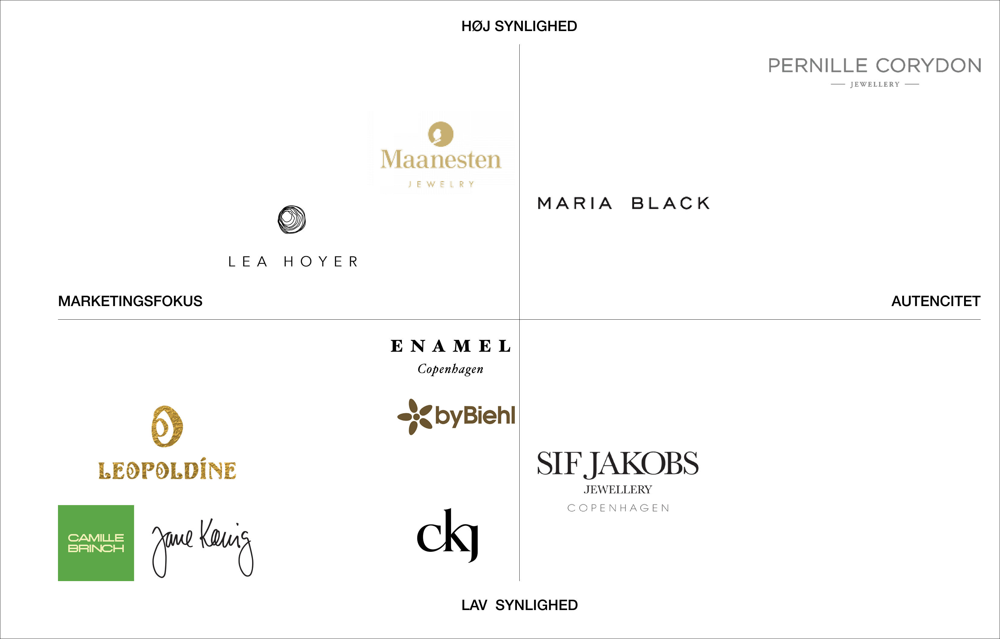
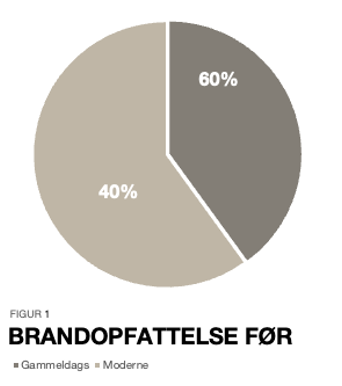
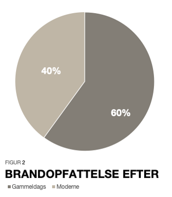
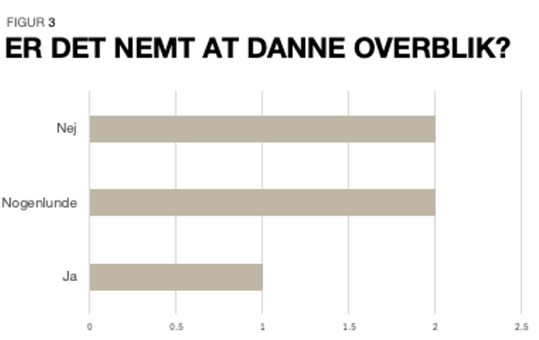
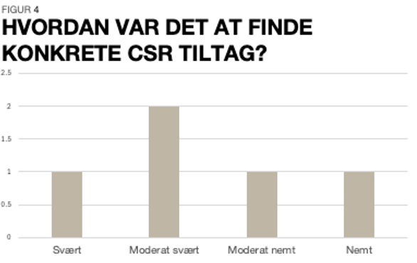
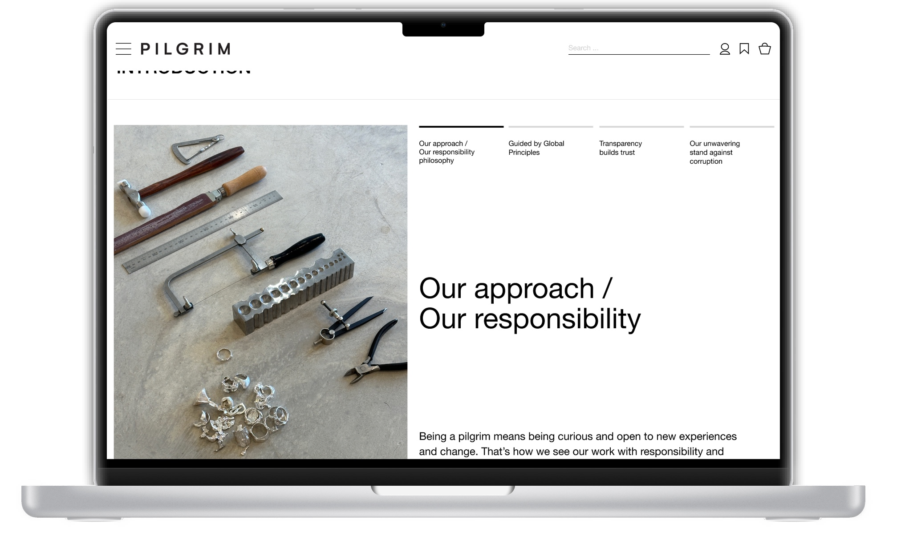
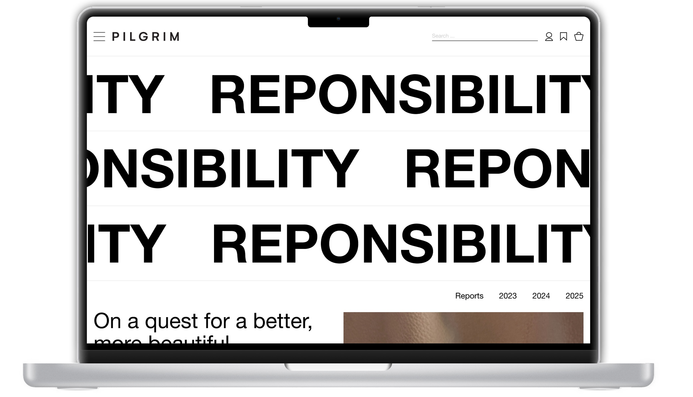
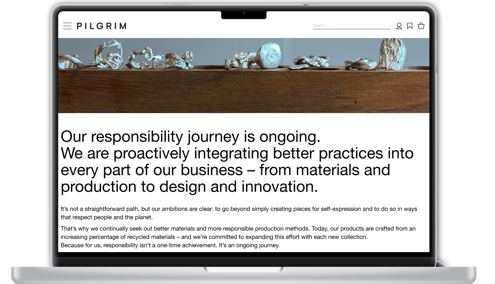

Nedenfor er en samling over min fuldførte dataindsamling i forbindelse med udviklingen/redesignet af CSR-siden
for Pilgrim A/S. Sidst linkes der til en fuld funktionel prototype i Figma.
Tag, hvad I kan/vil bruge og
efterlad resten.
DESK RESEARCH
Til deskresearchen har jeg undersøgt studier, tendenser og anbefalinger. De vigtigste indsigter er følgende:
1 / Dansk Erhverv
Studier viser, at når forbrugere oplever, at virksomheder arbejder troværdigt med CSR, har det en positiv effekt på både holdninger og loyalitet. En analyse fra Dansk Erhverv understøtter denne tendens. Her angiver 73% af danskerne, at de i nogen eller høj grad interesserer sig for klima- og miljøforbedringer, mens 57% oplyser, at de aktivt forsøger at tage hensyn til klima og miljø, når de handler. Analysen fremhæver desuden en række barrierer for mere bæredygtige forbrugsvalg, herunder pris, manglende information og usikkerhed omkring troværdigheden af miljøpåstande. Tallene afspejler en tydelig bevidsthed blandt forbrugere samt indikerer, at forbrugere efterspørger tydelig og verificerbar kommunikation for at kunne træffe informerede valg.
Undersøgelsen far Dansk Erhverv kan tilgås her2 / Kommunikations Preferencer
Forskning viser på, at forbrugere hurtigt kan blive skeptiske, hvis budskaberne fremstår kampagneorienterede eller ikke underbygges af konkrete handlinger. Forbrugerrådet Tænk peger på, at vage formuleringer og udokumenterede påstande kan opfattes som vildledende. Klimaskovfonden fremhæver tilsvarende for ifølge Astrid Bjørg Mortensen, chefkonsulent, bør bæredygtighedskommunikation være enkel, konkret, korrekt, præcis og relevant. Hun pointerer, at kommunikation skal følge princippet om, at ”overdrivelse ikke fremmer forståelsen”. Hendes tilgang understreger, at klarhed og dokumentation bør være centrale elementer i ens kommunikation. Derudover spiller visuelle virkemidler som farvevalg, billedstil og grafiske præsentationer en betydelig rolle. Et design, der signalerer bæredygtighed uden tydelig støtte i indholdet, kan skabe et misvisende indtryk og dermed svække kommunikationen.
Klimafondens anbefalinger kan tilgås herForbrugerrådet Tænks anbefalinger kan tilgås her
3 / Der er et hul i markedet, hvor Pilgrim strategisk kan placere sig
For at få indsigt i markedet, udarbejdes der en positioneringsakse.
Samlet peger analysen på et tydeligt uudnyttet område i markedet, hvor få smykkevirksomheder kommunikerer deres CSR-indsatser transparent og tilgængeligt. Dette giver Pilgrim mulighed for strategisk differentiering blot ved at have rapporterne let tilgængelige og klar kommunikation.
FIELD RESEARCH
1 / Observationer
For at opnå et realistisk indblik i Pilgrims kundebase blev observationer anvendt som en del af field researchen. Studiet blev gennemført i tre Pilgrim-butikker: to i Aarhus og én i København, repræsenterende henholdsvis en almindelig butik, en shop-in-shop og en flagshipstore. Butikkerne blev valgt for at repræsentere forskellige butiks- og forhåbentligt kundetyper. Deraf fik jeg følgende indsigter
Oversigt af alle indsigter
2 / Interviews
For at nuancere observationerne med brugernes personlige perspektiver og oplevelser suppleres feltstudiet med semistruktureret interviews.
Da Pilgrim ikke opererer med en klart defineret målgruppe, blev interviewdeltagerne udvalgt gennem konsekutiv udvælgelse, hvor jeg interviewede de kunder, der befandt sig i butikken på tidspunktet for observationen, og som var villige til at deltage. Deraf fik jeg følgende indsigter:
Oversigt af alle indsigter
3 / Usability test
For at validere interviewindsigterne og identificere centrale problemer i praksis gennemføres en usability-test af den nuværende CSR-side.
Flertallet af testpersonerne vurderede, at CSR-siden fremstod gammeldags og ikke harmonerede med deres opfattelse af Pilgrim som et moderne brand.
 Manglende overblik var en af de mest markante observationer. Figur 3 viser, at kun én ud af fem fandt siden overskuelig, mens resten vurderede den som moderat eller nogenlunde
Testpersonerne havde udfordringer med at finde konkrete tiltag eller handlinger. Figur 4 viser, at en fandt informationerne nemt, og flertallet vurderede opgaven som moderat svær eller svær. Under testen udtrykte en testperson følgende: “Jeg har en hvad-oplevelse og mangler en hvordan-oplevelse.”. Dette tyder på, at Pilgrims CSR-kommunikation i højere grad opfattet som ambitioner frem for handlinger og ville derfor defineres un-der ’marketing fokus’ med henhold til positioneringsaksen.
KRAVSPECIFIKATION
På baggrund af dataindsamling udvikledes der en problemdefinition for at præcisere udfordringerne og skabe overblik
Herefter blev der udarbejdet en kravspecifikation for at sikre, at løsningen reelt adresserer disse udfordringer.
LØSNING
Min endelig løsning er endt således:
  OBS kun udklip fra den endelige løsning.
Fuld funktionel prototype findes herEgne anbefalinger
1 / Genovervej mændgden af kommunikation, så der ikke er informationsoverflod, eftersom det kan få den modsatte end den tiltænkte effekt.
2 / Udarbejd tekstforfatning, hvor der kan laves tilsvarende infografik.